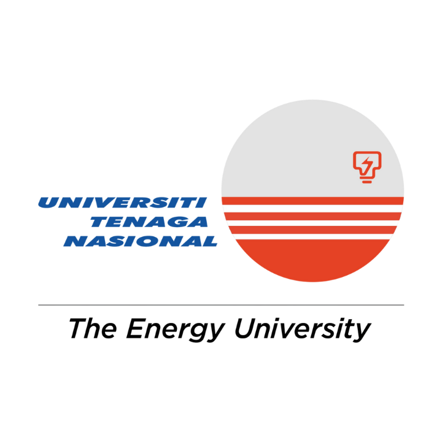
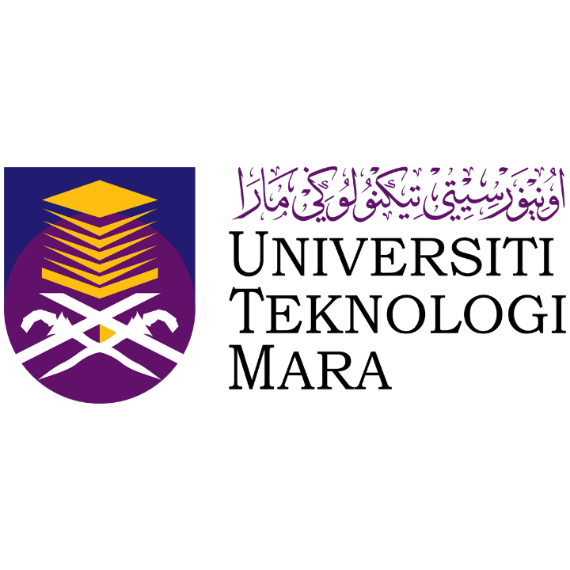
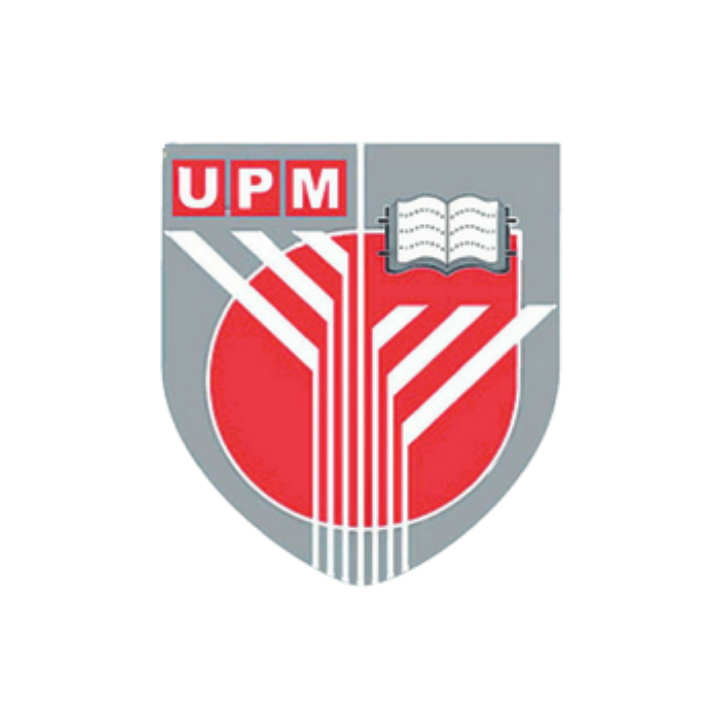
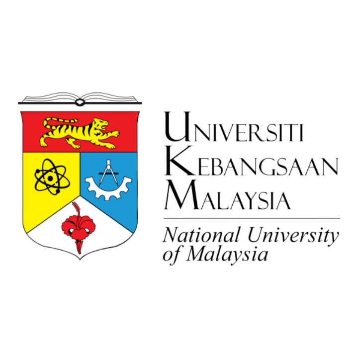
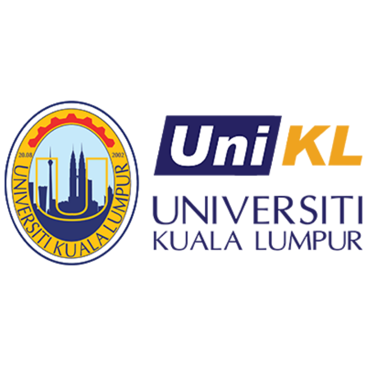
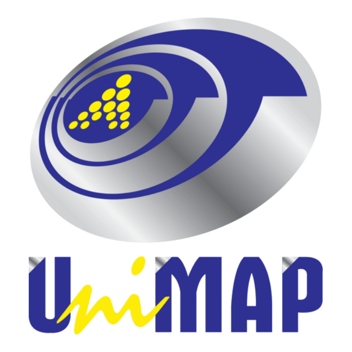

🏅 IEEE Malaysia Section FYP Competition 2024
Winners Announcement
Winners Announcement
The IEEE Malaysia Section FYP Competition 2024 celebrates innovative and outstanding Final Year Projects (FYP) across multiple engineering and technology tracks. This prestigious competition aims to recognize the technical prowess and creativity of students while promoting knowledge sharing and networking within the IEEE community.
ANTENNAS & PROPAGATION/ MICROWAVE THEORY & TECHNIQUE/ ELECTROMAGNETIC COMPABILITY
Technical Partner: ANTENNAS & PROPAGATION/ MICROWAVE THEORY & TECHNIQUE/ ELECTROMAGNETIC COMPABILITY
Design and Fabrication of Rectangular Microstrip Patch Antenna for 5g Wi-fi
Universiti Tenaga Nasional
TELECOMMUNICATION
Technical Partner: TELECOMMUNICATION
Dual Connectivity Band Selection Algorithm in 5G-NR/4G-LTE
Multimedia University, Cyberjaya
SYSTEMS, MAN AND CYBERNATICS RESPONSES
Technical Partner: SYSTEMS, MAN AND CYBERNATICS RESPONSES
Ocean Search and Rescue Tracking System Using GPS and IOT
Universiti Sains Malaysia
AgriDetect: Revolutionizing Crop Health with AI and IoT

Universiti Malaya
Design of A Computer Vision Module For Mobile Robots
Multimedia University, Cyberjaya
DIELECTRICS AND ELECTRICAL INSULATION
Technical Partner: DIELECTRICS AND ELECTRICAL INSULATION
Multi-Source Partial Discharge Classification in Rotating Machine Insulation based on Long Short-Term Memory-Recurrent Neural Network
Universiti Malaya
Classification of Faults in Oil-Insulated Power Equipment Based on Dissolved Gas Analysis Feature Selection and Multiple Model Fusion
Universiti Malaya
Surface Discharge Identification Due to Leakage Current on Glass Type Outdoor Insulator under AC Applied Voltage Adopting UHF Technique
Universiti Sains Malaysia
REHABILITATION & BIOMEDICAL ENGINEERING
Technical Partner: REHABILITATION & BIOMEDICAL ENGINEERING
An Experimental Investigation on Pulse Transit-time, Pulse Arrival-time, and Blood Pressure (BP) Using Two Ppg Sensors and Arduino Microcontroller
Universiti Teknologi MARA
Development of an Exoskeleton Arm Based on Surface Electromyography (EMG) Sensor
Universiti Teknikal Malaysia Melaka
Flexible Bioimpedance Sensing System For Diabetic Foot Ulcer Wound Healing Monitoring
Universiti Malaysia
UNDERWATER TECHNOLOGY AND OCEANIC ENGINEERING RESPONSES
Technical Partner: UNDERWATER TECHNOLOGY AND OCEANIC ENGINEERING RESPONSES
Ocean Search and Rescue Tracking System Using GPS and IOT
Universiti Sains Malaysia
RECENT TRENDS IN COMPUTATIONAL INTELLIGENCE
Technical Partner: RECENT TRENDS IN COMPUTATIONAL INTELLIGENCE
Dual Connectivity Band Selection Algorithm in 5G-NR/4G-LTE Heterogeneous Networks
Universiti Putra Malaysia
PHOTONICS
Technical Partner: PHOTONICS
Li-fi Based Smart Calorie Monitoring System
Universiti Kebangsaan Malaysia
POWER AND ENERGY
Technical Partner: POWER AND ENERGY
Classification of Faults in Oil-Insulated Power Equipment Based on Dissolved Gas Analysis Feature Selection and Multiple Model Fusion
Universiti Malaya
Surface Discharge Identification Due to Leakage Current on Glass Type Outdoor Insulator under AC Applied Voltage Adopting UHF Technique
Universiti Sains Malaysia
Development of a Fast-Charging Station for Electric Bike Lithium-Ion Batteries Using an Automated Cut-Off Switch
Universiti Teknikal Malaysia Melaka
NANOTECHNOLOGY
Technical Partner: NANOTECHNOLOGY
"Deposition of AZO Nanorods Using Immersion Method for Transparent Conducting Oxide (TCO) Application"
Universiti Teknologi MARA
SENSOR
Technical Partner: SENSOR
Smart Farming: Iot-enhanced Greenhouse Control System
Universiti Teknologi MARA
WOMEN IN ENGINEERING
Technical Partner: WOMEN IN ENGINEERING
Device Modeling of Carbon Nanotube Transistor (CNT) With Multilayer Perceptron (MLP) Neural Network
Universiti Putra Malaysia
Glioma Brain Tumour Classification and Detection of Magnetic Resonance Imaging (MRI) Using Convolutional Neural Network
Universiti Teknologi MARA
KTGH: A Mobile Application for Kapal Terbang Guesthouse
Universiti Kuala Lumpur Malaysian Institute of Information Technology
YOUNG PROFESSIONALS
Technical Partner: YOUNG PROFESSIONALS
PetPals: A Pet Care Companion Mobile Application
Universiti Kuala Lumpur Malaysian Institute of Information Technology
Design and Simulation of Micro-Electromechanical Systems (MEMS) for Medical Applications
Universiti Malaysia Perlis
Development of MATLAB Graphical User Interface for Real-Time Data Processing
Universiti Teknikal Malaysia Melaka
ROBOTICS AND AUTOMATION
Technical Partner: ROBOTICS AND AUTOMATION
Glioma Brain Tumour Classification and Detection of Magnetic Resonance Imaging (MRI) Using Convolutional Neural Network
UUniversiti Teknologi MARA
Design of A Computer Vision Module for Mobile Robots
Multimedia University, Cyberjaya
Proctoring Assistant Robot System
Universiti Malaya